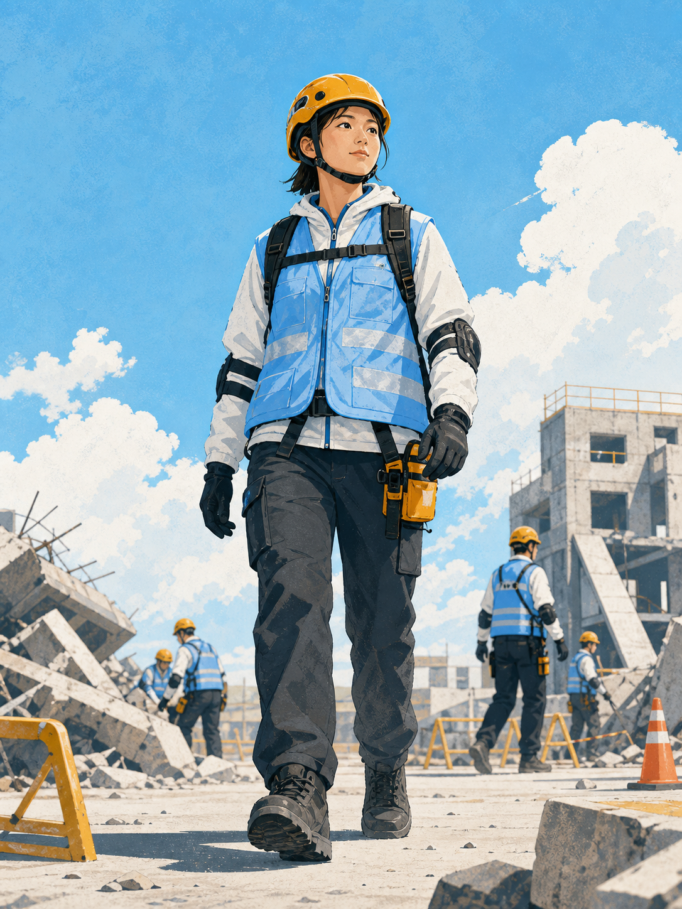
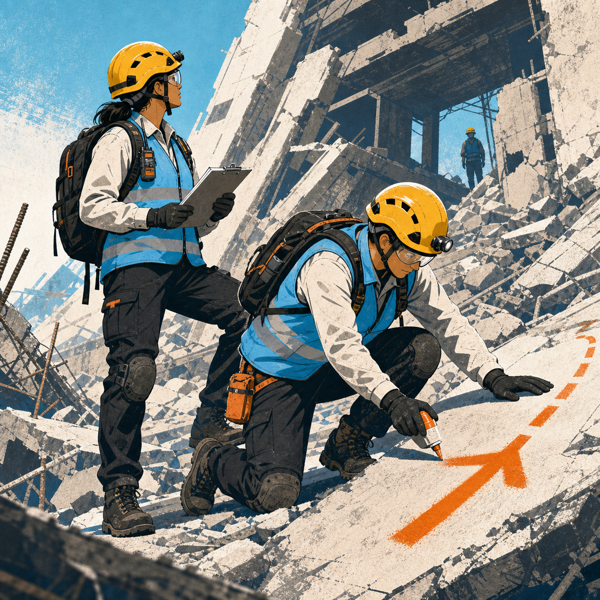
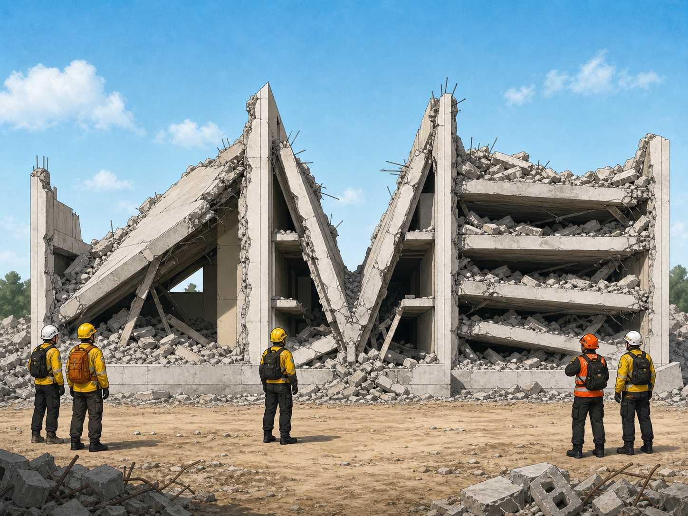

地震
結構損壞、餘震與落物。
COMMUNITY RESCUE TRAINING / 01
輕型搜救技術訓練

台灣面對地震、颱風、工安事故與戰時風險。專業消防資源有限，受過訓練的社區民眾能在黃金時間補上第一段空缺。
你可以成為這一群。
結構損壞、餘震與落物。
淹水、強風與電力風險。
機具、夾困與危害物。
爆炸、火災與二次攻擊。
PART 01 / SCENE SIZE-UP
時間、地點、事件、受影響範圍。
梁柱、樓板、裂縫、傾斜與落物。
還會發生什麼？次生風險在哪裡？
人力、裝備、訓練與限制。
先處理最危急且能介入的事。
進入、等待、撤退或請求支援。
任務、角色、路線與撤離點。
明確溝通，依計畫執行。
環境一變，重新回到第一步。
表面裂縫、小範圍非結構損壞；仍需持續觀察。
明顯裂縫、局部變形；限制接近並請專業評估。
結構傾斜達 1/30、樓板倒塌或主要構件破壞。
PART 02 / SEARCH & RESCUE

搜索標記讓後續隊伍知道誰來過、何時搜索、發現什麼，以及現場仍有哪些危害。
頭盔、護目、手套、口罩、安全鞋。
電線、瓦斯、積水與火源。
不站在不穩構件下方或倒塌路徑。
互相監看、保持視線或語音聯絡。
辨識斜靠、V 型與層疊空陷。看到倒塌樓板、持續位移或異常聲響，立刻退出並交由專業隊伍。

最少三人從不同位置聆聽，以聲音方向交會縮小範圍。逐區記錄，不用猜測取代確認。
「有人聽得到嗎？請敲擊三下！」
槓桿負責創造空間，疊木負責保住空間。每次小幅抬升、同步填入支撐，任何人都不把手腳伸入未穩固區域。
穩定、可逐層增高。
依荷重與材料配置。
清醒且能部分負重。
短距離且救援者能力足夠。
協調口令，同步抬起。
狹窄空間與樓梯需格外謹慎。
低姿勢撤離，保護頭頸。
FINAL CHECK